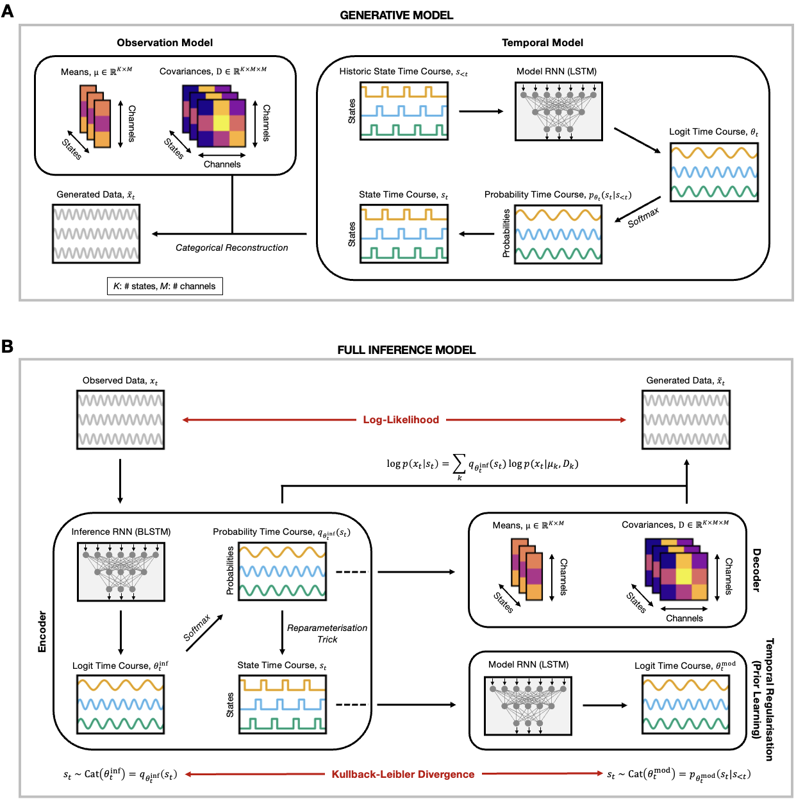
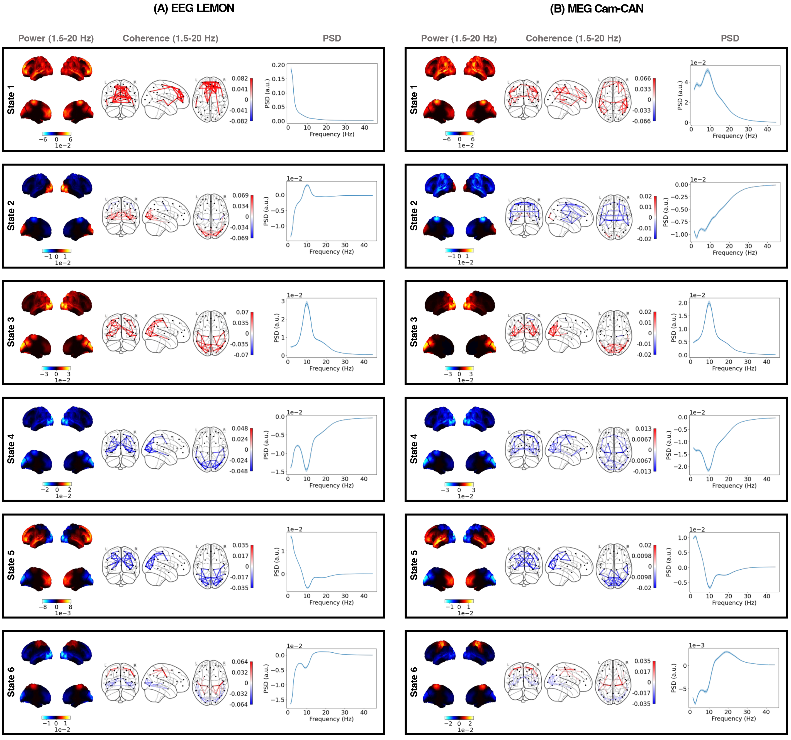
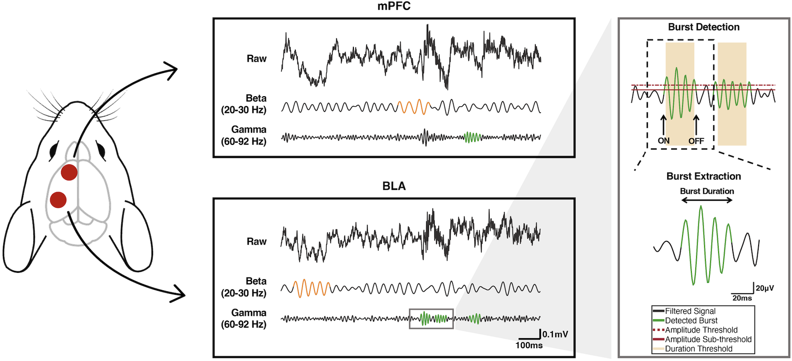
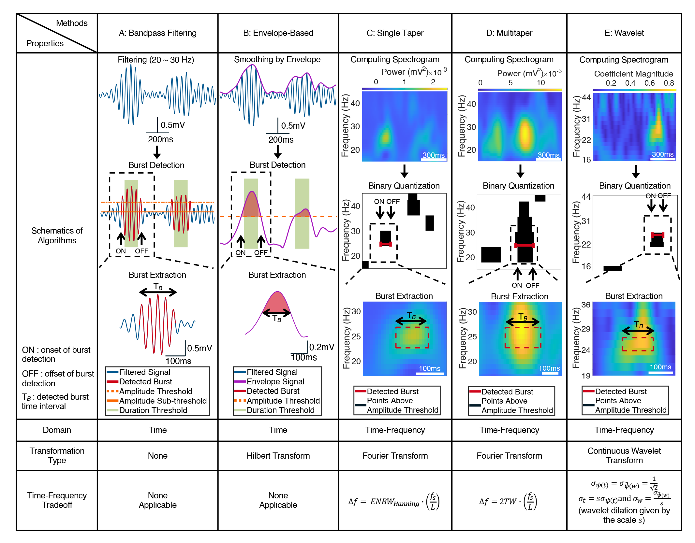
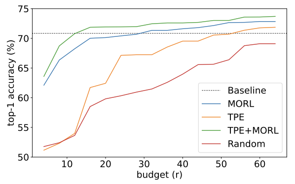
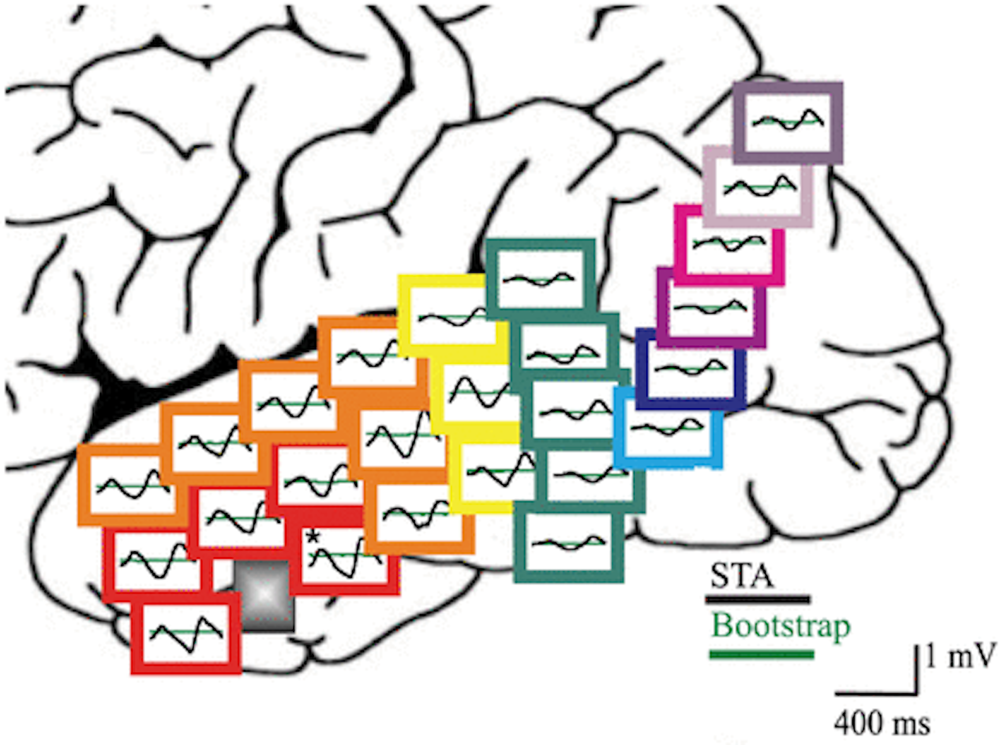

|
SungJun Cho
sungjun.cho@ndcn.ox.ac.uk
I am a second-year DPhil student in the OHBA Analysis Group and
ORI PNPL at the University of Oxford, advised by Mark Woolrich
and Oiwi Parker Jones. My research focuses on the development of new statistical and machine learning methods
for analysing neuroimaging data and their application to various neuropsychiatric disorders.
I received an MSc (by Research) in Psychiatry from the same group. Prior to this, I was part of Lunit's AutoML team, working on the hyperparameter
optimisation problem. I completed my undergraduate studies in neuroscience and philosophy at the University of Chicago.
I am generously supported by the Medical Sciences Graduate School studentship, funded by the MRC,
NDCN, and Hertford College.
[CV]
[Github]
[Google Scholar]
[LinkedIn]
[X]
|
|
News
- 🥇 June 2026: Won first place in n8n's challenge track and placed top three in Superlinked's track at the London AI Hackathon hosted by {Tech: Europe}.
- 🎤 June 2026: Gave a talk on our OSL software library at the OxCIN United Open Science Session.
- 🎉 May 2026: A paper on MEG-GPT-2 accepted to ICML 2026 FMSD Workshop.
- 📝 May 2026: A paper on Dynamic Network States (DyNeStE) now published in Imaging Neuroscience.
- 🎉 May 2026: Our HBM paper is selected as the Wiley Top Viewed Article of 2025.
- 🎉 April 2026: Our HBM paper is selected as the Wiley Top Cited Article of 2025.
Research
I have a strong interest in computational neuroscience, sequential modelling, and probabilistic learning.
My research thus far has focused on developing and applying computational methods to understand the neural dynamics underlying our cognition
and behavior in health and disease.
Representative papers are highlighted. Asterisks (*) denote an equal contribution.
For a complete list of my papers, please visit my Google Scholar profile.
|

|
Modelling Discrete States and Long-Term Dynamics in Functional Brain Networks
SungJun Cho, Rukuang Huang, Chetan Gohil, Oiwi Parker Jones, Mark Woolrich
Imaging Neuroscience (2026)
[
Paper,
Code
]
This paper proposes DyNeStE, an RNN-based model that employs amortised Bayesian inference with a Gumbel-Softmax distribution to infer
discrete, interpretable brain network states while capturing long-range temporal dynamics. DyNeStE recovers plausible brain network
features and outperforms HMMs in modelling long-range temporal structure, offering an interpretable framework for representing large-scale
neural activity as discrete state transitions.
|
|

|
Comparison between EEG and MEG of static and dynamic resting-state networks
SungJun Cho, Mats van Es, Mark Woolrich, Chetan Gohil
Human Brain Mapping (2024)
*Wiley Top Cited & Viewed Article
[
Paper,
Code
]
We investigated resting-state networks (RSNs) using a medium-density EEG system, comparing both static and dynamic brain network features to those
from a high-density MEG system. Results show that EEG and MEG provide comparable brain network descriptions, albeit with MEG offering some increased
sensitivity and reproducibility.
|
|

|
Mouse Escape Behaviors and mPFC-BLA Activity Dataset: Understanding Flexible Defensive Strategies Under Threat
SungJun Cho*, Hio-Been Han*, DaYoung Jung, Jisoo Kim, Jee Hyun Choi
Scientific Data (2024)
[
Paper,
Code,
Dataset
]
This study introduces a novel dataset capturing the defensive behaviours of mice against a spider robot, both individually and in groups, in a
naturalistic setting. The dataset offers insights into the neural mechanisms underlying freeze and flight responses and provides a new avenue for
studying the transient neural dynamics of adaptive escape responses in isolated and social contexts.
|
|

|
A guide towards optimal detection of transient oscillatory bursts with unknown parameters
SungJun Cho,
Jee Hyun Choi
Journal of Neural Engineering (2023)
[
Paper,
Code
]
This study compares different burst detection algorithms designed to detect transient neural oscillatory events from electrophysiological signals
and discuss their respective limitations. We additionally propose a selection rule that aims to identify an optimal algorithm for a given dataset
based on the signal properties of burst events.
|
|

|
Improving Multi-fidelity Optimization with a Recurring Learning Rate for Hyperparameter Tuning
Hyun Jae Lee, Gihyun Kim, Junhwan Kim, SungJun Cho, Dohyun Kim, Donggeun Yoo
WACV (2023)
[Paper]
This paper introduces a novel algorithm for multi-fidelity hyperparameter optimisation in CNN called Multi-fidelity Optimization with a Recurring Learning rate (MORL).
Our algorithm leverages the properties of recurring learning rate schedules to select high-performing hyperparameter configurations that often converge slowly,
thereby preventing the early termination of best configurations in the standard low-fidelity optimisation process.
|
|

|
Role of paroxysmal depolarization in focal seizure activity
Andrew K Tryba, Edward M Merricks, Somin Lee, Tuan Pham, SungJun Cho, ... Wim van Drongelen
Journal of Neurophysiology (2019)
[Paper]
Sustained focal seizure activity is a multiscale phenomenon, observed at both the meso- (microelectrode arrays) and macro- (standard clinical recordings) scales.
This work hypothesises that the local failure of inhibition at the mesoscopic level caused by paroxysmal depolarisation gives rise to the propagation of ictal waves,
whereas the inhibition in surrounding regions persists to support oscillatory activity at the macroscopic level. Theoretical, experimental, and clinical evidence are
presented to support this dual role of inhibition.
|
© SungJun Cho | Design: Source | Hosted by GitHub Pages
|
{kind=link}